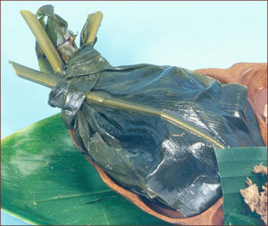
{kind=link}
Lau-Lau
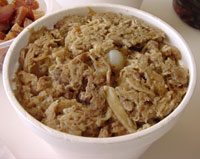
{kind=link}
Kalua Pork
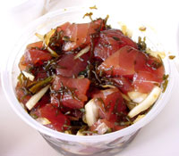
{kind=link}
Poke
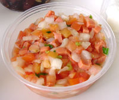
{kind=link}
Lomi Salmon
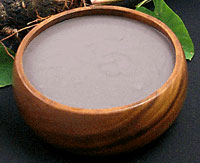
{kind=link}
Poi
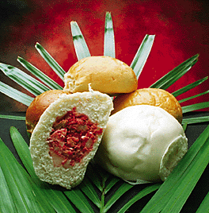
{kind=link}
Manapua
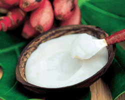
{kind=link}
Haupia
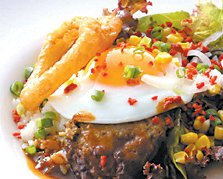
{kind=link}
Loco-Moco

Saimin
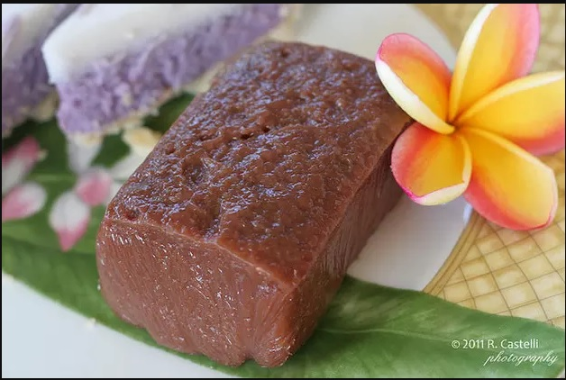
{kind=link}
Kulolo
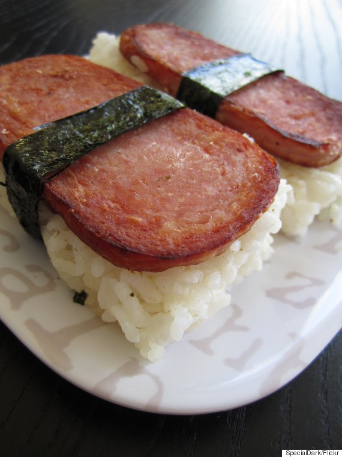
{kind=link}
Spam Musubi
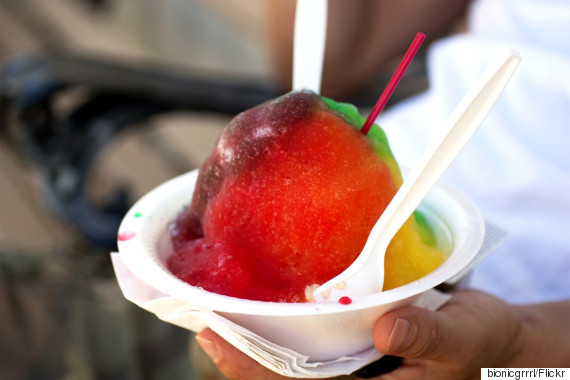
{kind=link}
Shave Ice
Lau-Lau
A lau lau (sometimes spelled laulau) is an authentic Hawaiian entree. It is made with exotic and delicious ingredients starting with either a pork (pork shoulder usually, not pork loin), chicken or vegetable filling, sometimes with a little bit of rich and flavorful salted butterfish. Each lau lau filling is then individually wrapped in 6 to 7 taro leaves, sort of like Hawaiian spinach leaves. Once bundled in its many layers, the lau lau is firmly wrapped and tied inside 2 ti-leaves to form a pouch that seals the moisture and unique flavors of the taro leaves, fillings, and seasonings. Lau laus are pressure cooked in a steamer oven or, in the old days, in an imu (underground oven).
Price: ₱ 105
Kalua Pork
It is called Kalua pig or Kalua pork, pronounced the same as the alcoholic drink called Kahlua but there’s no Kahlua (or alcohol) in Kalua pig. The kalua pig is usually the centerpiece of a Hawaiian luau, where it is traditionally cooked in an “imu”, (an oven dug into the ground). You can approximate the flavor of kalua pig in your own kitchen using liquid smoke flavoring and Hawaiian salt. The flavor is delicious; smoky and salty. If you’ve ever had Mexican carnitas, Kalua pig has a similar texture; pulled pork like this is tender and juicy.
Price: ₱ 125
Poke
Most people on the islands pronounce it Pokey (like Gumby’s red pal) but it’s pronounced Poke (rhymes with Okay). Otherwise it would be spelled Poki in Hawaiian. Anyway, it’s usually made with ahi (the Hawaiian word for yellowfin tuna), basically it’s a raw fish salad, usually flavored with soy sauce, sesame oil, kukui nut, and seaweed. Now, before you go “Yuck!” lots of cultures eat raw fish, especially Asian cultures. The Japanese love sushi and sashimi, and of course many people eat lox (which technically isn’t raw, it’s cured and smoked), and the Scandinavians eat something called gravlax (which is salt-cured salmon). Ceviche is Peruvian in origin and is basically a raw fish dish; Hoe is Korean sashimi; I’m sure there are many others. Point is; you should give poke a try while visiting Hawaii. There are well over 100 kinds of poke throughout Hawaii.
Price: ₱ 100
Lomi Salmon
Lomi Salmon (pronounced low-me) is also known as lomi-lomi salmon is a seafood dish that originated in Hawaii. It is typically prepared by mixing salted, diced salmon with tomatoes, crushed ice, and green onions. Usually this mixing is done by hand with a “massaging” action, which gives the dish its name (lomi is Hawaiian for “to massage”). Lomi salmon is typically found at modern Hawaiian luaus, and it is said to complement poi, the Polynesian staple made from taro. Although lomi salmon is not, strictly speaking, a traditional Hawaiian dish, it is still considered an integral part of a luau. The color red in the Hawaiian religion has ritual significance, and the ancient Hawaiians offered kumu, a red-colored fish, to the gods. Because of the red color of the salmon flesh, the Journal of American Folklore speculates that lomi salmon is a substitute for kumu, which is not normally served at luaus nowadays.
Price: ₱ 110
Poi
Poi is a Hawaiian word for the primary Polynesian staple food made from the taro plant. Poi is produced by mashing the cooked taro (baked or steamed) to a highly viscous fluid. Water is added during mashing and again just before eating, to achieve a desired consistency. The bowl of poi was considered so important and sacred a part of daily Hawaiian life that whenever a bowl of poi was uncovered at the family dinner table, it was believed that the spirit of Ha-loa, the ancestor of the Hawaiian people, was present. This is because Hawaiians believed that the taro plant, or kalo, was the original ancestor of the Hawaiian people. Because of that, all conflict among family members had to come to an immediate halt. Most first-time tasters describe poi as resembling library paste—more an allusion to the texture than the flavor, which is delicate. Poi is an acquired taste, but quickly makes converts of those who persist.
Price: ₱ 100
Manapua
Manapua is Hawaiian slang for the Chinese food cha siu bau (pork-filled bun). The 19th century marked a historical period in Hawaii as thousands of immigrants from different countries came to the islands seeking work. Over 50,000 Chinese immigrants brought their customs, cultural activities and especially their ethnic foods. Food vending in the street was a common trade in the marketplace towns of China. In Hawaii, food peddlers sold a variety of delectable items especially their famous char siu bao. The peddlers would stack their foodstuffs in large cans and sling the cans by cords at each end of a pole. Hoisting the poles on their shoulders, they roamed the neighborhoods with their savory-filled buns. Char siu bao immediately became a favorite among the locals, and was given the name mea ono pua’a (“mea ono” for cake or pastry, and “pua’a for pork) over the years it became lost in translation and is now called Ma-na-pu-a. The food peddlers today, also known as the manapua man, don’t roam the streets on foot anymore. They can be found in a big truck parked at beaches, small neighborhoods, near the business districts and other places around the island. For many, eating a manapua can be nostalgic, bringing childhood memories of making a trip to the manapua man’s truck. Most people are aware of the (traditionally Chinese) version of the steamed variety of manapua, but there’s also a baked version that features our sweet, fluffy Hawaiian bread.
Price: ₱ 100
Huapia
Haupia is a traditional coconut milk-based Hawaiian dessert often found at luaus in Hawai‘i and in local confections that contain coconut. Although technically considered a pudding, the consistency of haupia closely approximates gelatin desserts and is usually served in blocks like gelatin. The traditional Hawaiian recipe for haupia calls for heated coconut milk to be mixed with ground arrowroot until the mixture thickens. Most modern recipes for haupia substitute corn starch for the arrowroot. In the typical modern recipe, diluted coconut milk, sugar, and salt is mixed with cornstarch and heated until thickened and smooth, then poured into a rectangular pan and chilled as with gelatin. Other recipes actually call for unflavored gelatin in place of the corn starch.
Price: ₱ 130
Loco Moco
Loco-Moco (sometimes spelled locomoco or loco moco) is a famous Hawaiian dish. There once was a little hole in the wall restaurant called Cafe 100 (on the Big Island of Hawaii) that lays claim to the first-ever loco moco. It is a high-carb, high-protein and delicious dish that was originally invented to help cure the hunger of active surfers. It’s basically white steamed rice, a fried egg, a hamburger patty, topped with brown gravy. You can get it all over the islands, literally.
Price: ₱ 190
Saimin
Saimin (Sai rhymes with eye. Min as in minute) — Saimin noodles are Chinese in origin, thinner than ramen noodles (which are Japanese in origin) and often found throughout Hawaii. You can even get saimin at McDonalds! Saimin may also contain green onion (also called Spring onion or scallion), kamaboko (fish cake), spam, sliced char siu (Chinese roast pork), and dried or butterflied fresh shrimp.
Price: ₱ 170
Kulolo
This dessert is similar to haupia, but is made with grated taro, which gives it a nutty sweetness. It also has a thicker, more mealy texture, when compared with the smoothness of haupia. The version of kulolo eaten now is a post-contact invention, but ancient Hawaiians mixed the flesh of a mature coconut with taro to make the original dish. Hawaiians also mixed coconut cream with sweet potato to make poipalau, or with very ripe breadfruit to make paipaiee. These delicious desserts were all wrapped in ti leaves and baked in an imu.
Price: ₱ 145
Spam Musubi
When the phrase “don’t knock it ‘til you try it” was coined, we’re pretty sure they were talking about Spam. This simple combination of rice, fried Spam and dried seaweed is the crown jewel of Hawaii snacks.
Price: ₱ 100
Shave Ice
The most delicious, finely shaven snow cone you’ve ever dreamed of. With syrup flavors like lilikoi, coconut and li hing mui, this dessert is basically a tropical rave in your mouth. Add ice cream, mochi balls, azuki beans or condensed milk to the equation. Trust us. Do it.
Price: ₱ 75
Our Services
We serve delicious, fresh, authentic and affordable Hawaiian food.
Follow Us on our Social Media accounts
 |
 |
 |
|---|---|---|
Our Blogs
Hawaiian Food Description
Most people who visit Hawaii want to try a Luau and Hawaiian food during their stay. Contrary to popular belief, Hawaiian food is NOT a hamburger with pineapple on it, nor is it pizza with ham and pineapple, nor is it a piece of chicken with sweet pineapple sauce on it. Even though many people perceive Hawaii as the origin of pineapple, it isn’t. Pineapples are originally from Brazil and are not native to Hawaii at all.
If you’re interested in learning more about ancient and traditional Hawaiian food, there are a lot of great sources on the Web. Our page, though, is more about modern Hawaiian foods.
So now, for the benefit of curious and adventurous eaters like you I thought I’d put up a description of some favorite Hawaiian foods. Enjoy!
Hawaiian Food Influence
Well-known Hawaiian cuisine is influenced by many cultures and settlers throughout island history. Some dishes are a fusion of Hawaiian recipes with Japanese, Chinese, and Portuguese influences, though locals still commemorate those classically Hawaiian.
How to Eat Hawaiian Food
There’s a reason why Hawaiian food restaurants have lines going out the door. Feasts of Poi, Kalua Pork, Lomi Salmon and Haupia are the culinary soul of Hawaii, as much a part of island life as shaka signs, surf sessions and windward and mauka showers.
Locals start early. Poi is the first solid food given to island babies, and by the time kids grow up and venture away for school, business trips or life in distant locales, they’re planning their first meals back home at their favorite Hawaiian restaurants well before the plane lands.
If you’ve never tried Hawaiian food, here are some tips and a primer of favorite dishes. Follow these and you’ll be digging in like a local.
Testimonials
"Delicious Hawaiian foods! It feels like home." --Davis McKenny, Honololo, Hawaii
"Nice food. Nice people. Nice place." --Jaimen Johnson, Canada
"Awesome. I love Loco Moco!" --Marcus Santos, Manila, Philippines